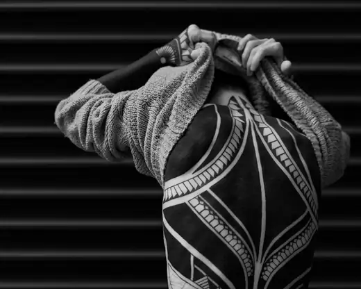
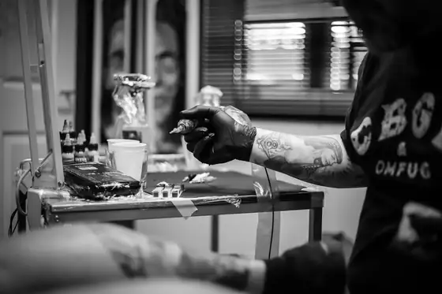

Vera Mota
Negro sólido y simetría. Piezas grandes de una sola pieza: manga, muslo, esternón, espalda entera.
Reg. 2011
Nigredo. La fase negra. El primer estadio de la Gran Obra: todo se descompone antes de volver a formarse.
Cuatro artistas en un segundo piso de Espíritu Santo. Cada pieza entra en el registro con un número, y ese número es su dirección para siempre.
Solo con cita previa. No atendemos sin reserva: si subes y no has escrito antes, te vamos a decir que escribas.

El sistema
Cada trabajo terminado se ficha con un número de plancha. Sirve para hablar de él sin describirlo: dinos PL. 014 y sabemos exactamente de qué estamos hablando.
Herramientas
Cuatro cosas que puedes averiguar ahora mismo sin escribirle a nadie. Cuando nos escribas, escribe ya sabiendo.
Las manos
No somos intercambiables. Elegir artista es la primera decisión del tatuaje, y pesa más que la zona o el tamaño.
Negro sólido y simetría. Piezas grandes de una sola pieza: manga, muslo, esternón, espalda entera.
Retrato, textura, materia. Retrato, realismo animal, composiciones de varias sesiones.
Línea fina que aguanta. Piezas pequeñas y medianas, botánica, objetos, líneas sueltas.
Color saturado, línea cerrada. Fauna, figura, objeto, piezas de color de una o dos sesiones.
El sitio

Portal negro entre la cerrajería y el bar. Segundo piso, sin placa. Llama al telefonillo donde pone 2B.
Tribunal (L1, L10) a 4 min · Noviciado (L2) a 6 min